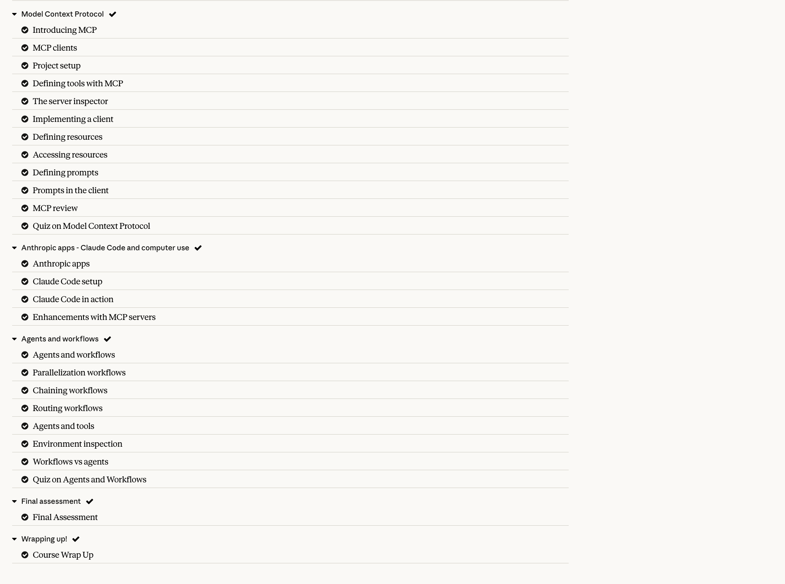

Parallelization workflows
Course context
Part of Agents and workflows — Building with the Claude API (Skilljar)

In plain terms
Instead of asking Claude to do several unrelated things one after another, you can fire off multiple requests to Claude at the same time and combine their answers once they all come back. This is faster (because the calls overlap in time rather than queuing up) and, when you ask the same question multiple times and compare the answers, it can also make the final result more reliable.
Deep dive
Parallelization is a workflow pattern — the control flow is still fixed by your code, but instead of a single linear chain of calls, several independent LLM calls run concurrently and their outputs are aggregated programmatically at the end. This module (based on Anthropic’s “Building Effective Agents” guidance) describes two variants: sectioning and voting.
Sectioning breaks one task into distinct, independent subtasks, each handled by its own LLM call, run concurrently. The subtasks don’t need each other’s output to run — that’s what makes them safe to parallelize. A classic example: reviewing a piece of content for four unrelated concerns (factual accuracy, tone, legal risk, formatting) as four separate calls that all fire off at once rather than four calls in sequence. Sectioning is a good fit whenever a task decomposes cleanly into independent pieces of work, and it’s also useful simply to keep each individual prompt focused — a single call trying to check four different things at once tends to do a worse job on each than four calls that specialize.
Voting runs the same task multiple times — usually with the same prompt, sometimes with slight variations — and then aggregates the results, most often via majority vote, an averaging step, or a further LLM call that synthesizes the several answers into one. Voting is useful when you want to hedge against the fact that a single LLM call is not perfectly deterministic: running it three or five times and looking for consensus can catch cases where one run went off track. It’s also useful for tasks with a natural “confidence” signal — if four out of five parallel classification calls agree, you can trust the answer more than if you’d only asked once.
Both variants share the same shape in code: kick off N independent calls concurrently, wait for all of them, then run an aggregation step. In Python this maps naturally onto asyncio.gather:
import asyncio
from anthropic import AsyncAnthropic
client = AsyncAnthropic()
async def call_claude(prompt: str) -> str:
response = await client.messages.create(
model="claude-opus-5",
max_tokens=1024,
messages=[{"role": "user", "content": prompt}],
)
return response.content[0].text
async def sectioning_example(document: str):
# Independent subtasks — each checks something unrelated, run concurrently
prompts = [
f"Check this document for factual errors:\n{document}",
f"Check this document's tone for professionalism:\n{document}",
f"Check this document for legal risk:\n{document}",
]
results = await asyncio.gather(*(call_claude(p) for p in prompts))
return dict(zip(["accuracy", "tone", "legal"], results))
async def voting_example(question: str, n: int = 5):
# Same task, run N times, then aggregate
prompt = f"Answer with only 'yes' or 'no': {question}"
results = await asyncio.gather(*(call_claude(prompt) for _ in range(n)))
yes_votes = sum(1 for r in results if "yes" in r.lower())
return "yes" if yes_votes > n / 2 else "no"The key mechanical point is that asyncio.gather (or the equivalent in whatever language you’re using — Promise.all in JavaScript, goroutines with a WaitGroup in Go) launches every call before waiting on any of them, so the total wall-clock time is close to the slowest single call rather than the sum of all of them. This is the entire performance win of the pattern: parallelization trades nothing in per-call cost (you still pay for every token in every call), but it can dramatically cut latency versus running the same calls sequentially, and voting can improve quality at the cost of running the same work multiple times.
Parallelization connects to the next two lessons in a specific way: it is the simplest workflow pattern because the parallel branches don’t need to talk to each other or pass state between steps — that’s exactly what chaining (the next lesson) requires, since each step in a chain depends on the previous one’s output. And where parallelization or chaining route every input through the same fixed set of calls, routing (two lessons ahead) instead picks a different single path per input based on what kind of input it is. Parallelization runs multiple paths for one input; routing picks one path per input.
Pitfalls. The most common mistake is parallelizing subtasks that actually have a dependency — if subtask B needs subtask A’s output, running them concurrently just means B runs on stale or missing context, and you should chain instead. A second pitfall with voting specifically is treating majority-vote as though it fixes any underlying quality problem — if the model is systematically wrong about something, running it five times just gets you five wrong (but consistent-looking) answers; voting only helps with inconsistency, not with bias. Third, aggregation is easy to underinvest in: a voting scheme needs a clear, well-defined way to combine N answers into one (majority vote for categorical outputs, averaging for numeric ones, or a synthesis LLM call for free text), and a sectioning scheme needs to actually reconcile results that might conflict (e.g. the tone-check flags something the accuracy-check missed). Finally, remember every concurrent call still costs money and consumes rate-limit headroom — fanning out to 20 parallel calls for a task that didn’t need it is a real cost, not a free lunch just because it’s fast.
Key takeaways
- Parallelization runs independent LLM calls concurrently and combines their outputs — it trades no per-call cost for lower wall-clock latency, and (with voting) can improve reliability.
- Sectioning splits one task into independent subtasks run at once; voting runs the same task multiple times and aggregates for consensus or confidence.
- In code, this is
asyncio.gather(or your language’s equivalent) plus an aggregation step — never parallelize subtasks with a real dependency between them. - Voting fixes inconsistency, not bias — it won’t rescue a model that’s confidently, consistently wrong.
- Unlike chaining, parallel branches don’t need to share state; unlike routing, parallelization runs multiple paths for every input rather than picking one.
Related lessons
Previous: 01 Agents and workflows Next: 03 Chaining workflows